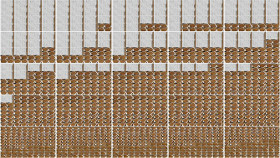

Zu Hanne Darboven / Abschliessend
Thomas Mohr – NL 2014
8 min – HD – no dialogues
DoP+E+P: Thomas Mohr – M: Hanne Darboven
Part of a project approaching the music of Hanne Darbovens (1941 - 2009) through other angles and references of her body of work. ABSCHLIEßEND is the last piece of 4 of a series on Requiem Opus 22, Buch 58-61. Base are 1853 images taken as meticolous as possible in the last space
with late works of the exhibition “The order of time and things. The home studio of Hanne Darboven” containing parts of the One Century ABC and Square models. This material then is processed picture by picture, frame by frame in a system of expending cycles. The result is a new time space.
tuesday 13 oct 10.30 pm werkstattkino
Thomas Mohr Living and working in Amsterdam. Since the late 1980ties systematically exploring processes of perception and experience in installations and "films" referring the transformation of information and the evolution of new media. Working with computer-generated processes combined with manual execution based on an episodic memory containing at this moment more then 500000 pictures regarding events with a collective meaning as well as personal moments taken from 1985 onwards.
Films (selection) Realm 1 Part 1 2008 – Resonance 2010 – 544/544 (up/down) 2011 – Schinkel Zeit 2012 –Gedankenstrich(e)/Hanne Darboven 2013